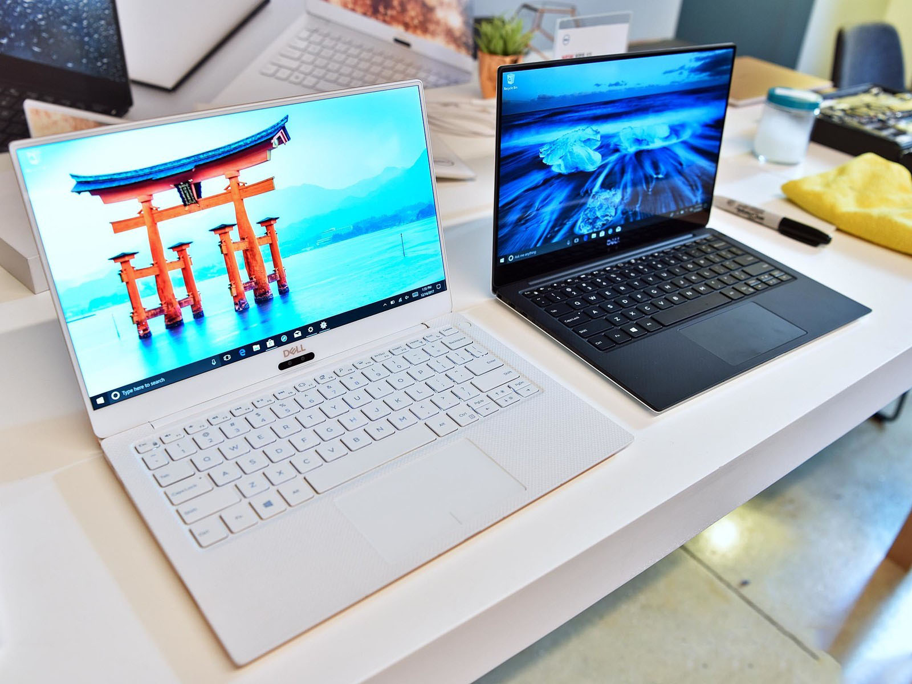
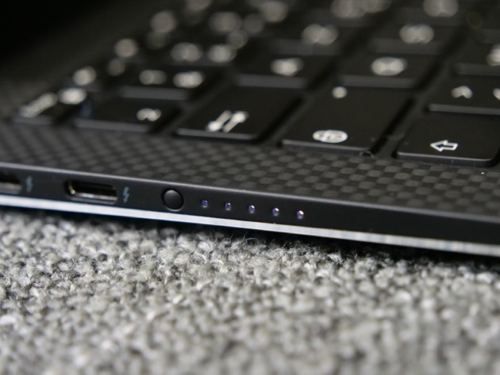
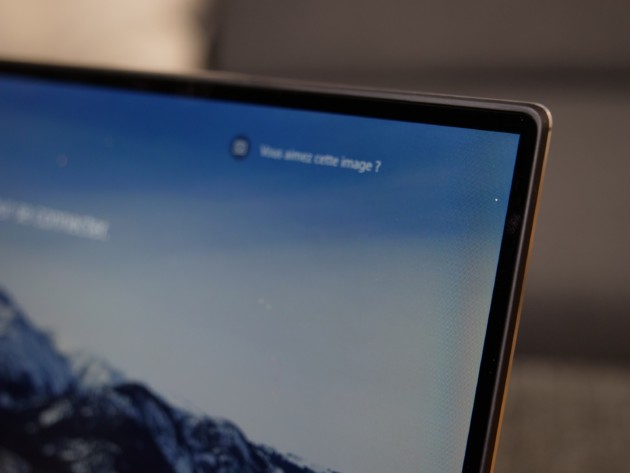
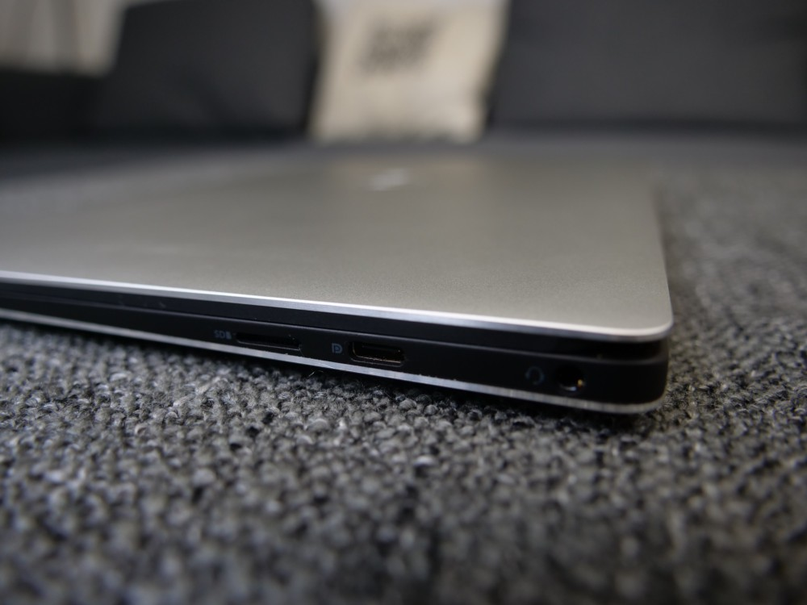
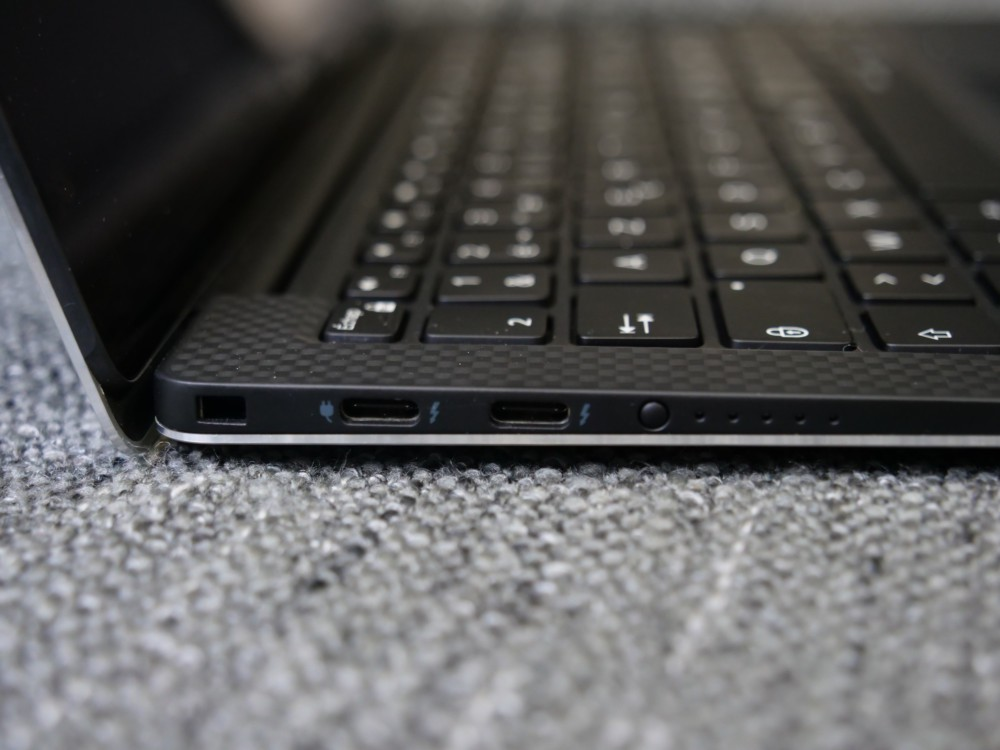
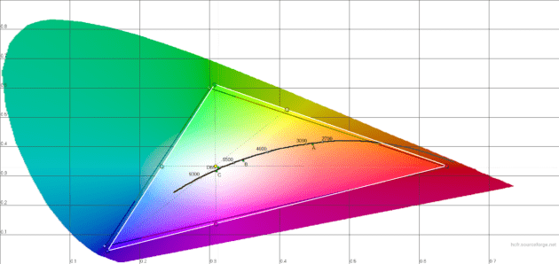
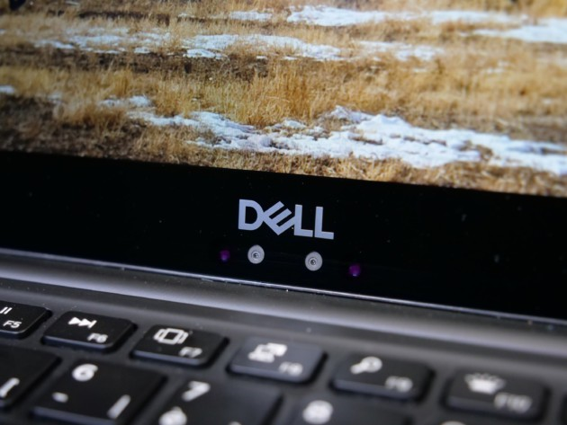
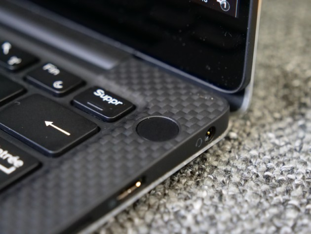
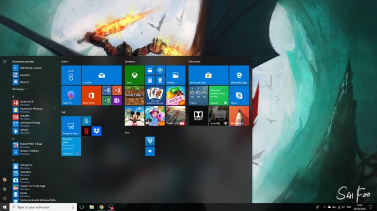
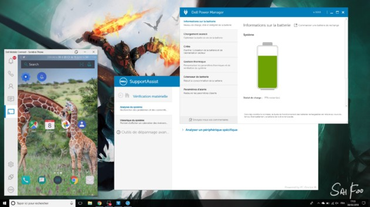

Dell XPS 13 9360
Note
8,4/10
Où acheter le Dell XPS 13 9360 Ordinateur Portable au meilleur prix ?
INTRODUCTION
Fin, léger, puissant et majestueux, le XPS 13, modèle phare de Dell en 2017, est le meilleur ordinateur portable au monde à l’heure actuelle. Peut-être étouffée par le fait qu’un modèle Alpine White plus esthétique est en route, la version que nous avons passée en revue devrait satisfaire votre soif de Windows Ultrabook. Que ce soit pour ses puissants processeurs Intel Kaby Lake i3 à i7 ou pour son écran « Infinity Edge » quasiment sans bord, qui intègre un écran de 13,3 pouces dans un cadre de 11 pouces, le Dell XPS 13 fait sensation auprès de la concurrence. Non seulement ça, mais le choix des ports est également pertinent. Comparé à l’approche exclusive de l’USB-C d’Apple, le Notebook phare de Dell impressionne avec — en plus de l’USB-C — de l’USB 3.0 avec une fente pour carte SD. Si l’on considère ces aspects, il n’est pas étonnant que le Dell XPS 13 soit l’ordinateur portable Windows le plus populaire au monde. Et pourtant, il y a encore mieux. Vous avez également le choix entre un écran ultra-haute résolution ou multi-touch, ainsi qu’une large gamme d’options de stockage et de mémoire. Vous pouvez également économiser de l’argent et opter pour des spécifications plus conservatrices.

DESIGN
Il s’agit donc toujours d’un ordinateur portable animé par un écran bord à bord de 13 pouces (ce qui lui donne la taille d’un ordinateur classique 12 pouces) avec un châssis en aluminium et en fibre de carbone. La robe grise distinctive de la gamme est abandonnée pour une couleur argentée plus classique, mais un second coloris est introduit : or rosé avec fibre de verre.

Les petits détails de la marque sont toujours là, comme ce témoin lumineux à l’avant du clavier qui s’allume lorsque l’ordinateur est en charge, ou ce bouton disponible sur la tranche de la machine (à côté des ports) et qui permet de connaitre l’état de la batterie sans sortir et allumer le PC.
péripherique
Les changements sont donc plus subtils, mails ils sont bien là et ils sont bienvenus. Premièrement, Dell a réglé le problème de la mauvaise intégration de l’écran à son ordinateur. Désormais, une dalle de verre recouvre l’écran et ses bordures, ce qui empêchera les poussières et autres saletés de s’incruster dans les bords de l’écran, comme c’était le cas sur la génération précédente. La caméra en façade est également mieux placée. Elle est toujours sous l’écran (ce qui signifie qu’elle filmera plutôt votre menton et votre nez que votre visage), mais désormais au centre plutôt que sur la gauche de la machine.

La connectique
On en arrive au premier point qui peut fâcher. Comme d’autres, Dell a revu la connectique de sa machine. Exit les ports USB-A classiques, le port d’alimentation et le lecteur de carte SD. Dell embrasse pleinement l’USB Type-C et intègre trois ports sur sa nouvelle machine avec un lecteur de carte micro SD et un port jack. Ainsi sur la tranche gauche on retrouve deux ports USB Type-C Thunderbolt 3, alors que la partie droite propose un port USB Type-C USB 3.1. De plus, chacun de ces ports est compatible avec le branchement d’un écran (en DisplayPort) ou à l’alimentation (avec un chargeur de 45 Watts). Malheureusement, l’adoption de l’USB Type-C par les périphériques étant ce qu’il est, difficile de ne pas avoir recours à des adaptateurs en tout genre. La connectique hybride de la précédente génération (USB Type-C et USB-A classique) était bien suffisante. Dell ne peut pas vraiment utiliser l’argument de la finesse pour l’adoption de cette connectique : le Dell XPS 13 2018 est à peine plus fin que son prédécesseur (7,8 à 11,6 mm contre 9 à 15 mm sur le papier), ce qui est imperceptible à l’usage.
 
ECRAN
Pour son XPS 13 (2018), Dell fait une nouvelle fois confiance à Sharp et troque la dalle SHP 1449 des précédentes générations pour une plus récente dalle SHP 1484. On parle ici de l’écran de 13,3 pouces IPS Full HD (1920 x 1080 pixels) que le fabricant propose sur ses modèles les plus accessibles, et notre exemplaire de test. La marque propose aussi des modèles équipés d’un écran tactile 4K UHD (3840 x 2160 pixels), une belle définition sur le papier, mais qui augmentera la consommation de l’ensemble alors que le Full HD reste amplement suffisant sur une diagonale de cette taille.

Une fois passé sous la sonde, l’écran de notre exemplaire se révèle capable de monter à une luminosité maximum de 290 cd/m² avec un contraste de 1566:1. C’est mieux que l’écran utilisé sur la génération précédente, mais ça reste en deçà de ce que l’on attend d’un écran haut de gamme en 2018. Dell a toutefois eu la bonne idée de proposer un filtre antireflet sur son écran, une rareté sur le marché en 2018. Les couleurs affichées sont donc un peu moins brillantes, mais l’écran reste utilisable même au soleil.
sécurité
Si l’on ne cherche pas une machine hybride se transformant en tablette, l’un des grands manques des précédentes générations de Dell XPS était l’absence d’option de biométrie. Le Dell XPS 13 (2018) corrige ce manque, et ne le fait pas à moitié. La caméra frontale 720p laisse ainsi sa place à une caméra 3D 720p avec capteur infrarouge, compatible Windows Hello. La machine est donc capable de reconnaître le visage de l’utilisateur, et ne devrait pas se laisser berner facilement. Cette reconnaissance est très rapide et efficace, mais demande à l’utilisateur d’être bien placé en face et de regarder la machine.

Dell propose également un lecteur d’empreintes plus classique, intégré au bouton d’alimentation de la machine, à côté du clavier. Le fabricant a donc intégré deux des solutions de reconnaissance biométrique les plus populaires du moment à sa machine, et laisse le choix à l’utilisateur de sélectionner sa préférée.

Systéme
Côté logiciel, Dell souffle le chaud et le froid. La machine intègre Windows 10 1709 en version familiale, alors que l’on pouvait s’attendre à une édition Pro sur une machine à ce prix qui propose quelques fonctions supplémentaires. Heureusement, la plus importante d’entre elles, le chiffrement des données, est depuis peu intégrée à la version familiale et était bien activée sur la machine. On ne présente plus Windows 10, la dernière version en date du système de Microsoft qui reçoit tous les 6 mois de nouvelles fonctionnalités gratuitement. Ces mises à jour, et les mises à jour de sécurité, sont obligatoires et distribuées directement par Microsoft, pas question de fragmentation ici comment on peut en connaitre sur mobile. On regrette une nouvelle fois que pour pousser sa boutique d’applications, Microsoft se sente obligé d’installer automatiquement une série de jeu et d’applications du Microsoft Store au premier démarrage du système. Ainsi, SketchBook, Spotify, Candy Crush Soda Saga, Disney Magic Kingdoms et d’autres ont été ajoutés au menu Démarrer du système sans qu’aucune demande ne soit faite à l’utilisateur. Heureusement, Il est possible en quelques clics de les désinstaller..

Dell rajoute également quelques logiciels de son cru. En dehors des applications habituelles permettant de mettre à jour les pilotes de la machine, ou de l’enregistrer auprès du support, on notera surtout l’ajout de Dell Mobile Connect, qui permet comme son nom l’indiquer de connecter son smartphone à son ordinateur. Ce logiciel demandera l’installation d’une application sur le mobile, puis permettra de synchroniser les appels, SMS et notification par Bluetooth. Si votre smartphone est sous Android, Dell Mobile Connect permet également d’afficher une image miroir du smartphone sur votre ordinateur et d’en prendre le contrôle à distance.

Fiche technique
| Modèle | Dell XPS 13 9360 |
|---|---|
| Processeur | Intel Core i (7-5-3) 7éme genération |
| Fréquence du processeur | 2.70 GHz |
| Type de mémoire vive | DDR3L-SDRAM |
| Capacité de stockage principal | 256 à 1 TB Go |
| Type de stockage principal | SSD |
| Interface stockage principal | M.2, Serial ATA III |
| Seconde baie disque | Non |
| Lecteur optique | Non |
| Résolution WebCam | 0.9 Mpx |
| Taille d'écran | 13.3 " |
| Format de l'écran | 16:9 |
| Tactile | Non |
| Définition de l'écran | 1920 x 1080 pixels |
| Aspect de l'écran | Mat |
| Processeur graphique | Intel HD Graphics 620 |
| Quantité de mémoire graphique | Partagée |
| SD / MMC | Oui |
| MicroSD | Non |
| Nombre de ports USB 3.0 | 2 |
| Ports Thunderbolt | 1 |
| Ports eSATA | Non |
| Support du NFC | Non |
| Système audio embarqué | Stéréo |
| Support du Wi-Fi | Wi-Fi 802.11ac |
| Support du Bluetooth | Bluetooth 4.1 |
| Ethernet 10/100 | BNon |
| Support du Bluetooth | Bluetooth 4.1 |
| Capacité de mémoire vive | 4-16 Go |
| Système d'exploitation | Windows 10 64-bits |
| Poids (batterie incluse) | 1.22 kg |